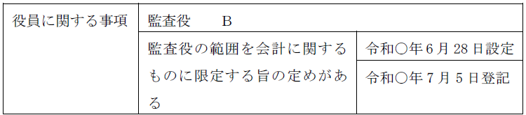
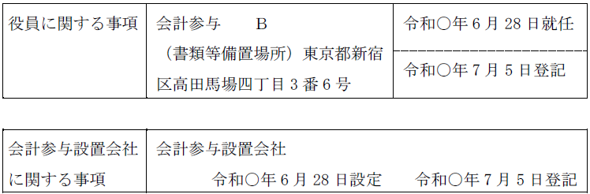
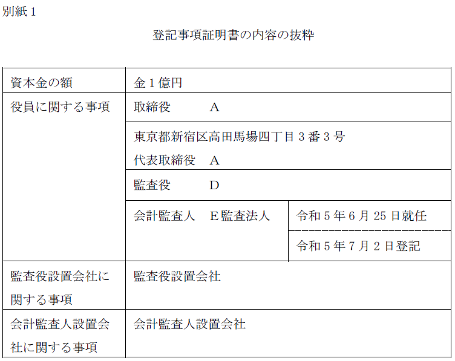
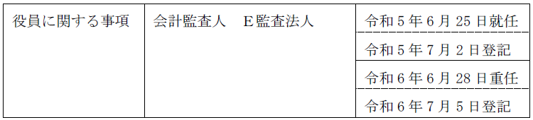
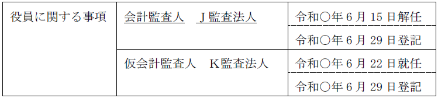

第２編 株式会社
第２章 機関
第７節 機関に関する登記
Ⅰ 役員等の就任登記
1. 監査役
(1) 登記申請書
【申請例4 監査役設置会社の定め 設定】
事例： 令和○年6月28日、株主総会で、監査役を設置する決議がされ、監査役としてＢが選任された。Ｂは席上、就任を承諾した。申請会社の資本金の額は、金1億円である。
※監査役設置会社の定めの設定の登記と監査役の就任登記は同時に申請する必要があり、一方だけ申請することはできない。
(2) 申請書の内容
①登記の事由
【設置の場合】
「監査役設置会社の定めの設定」「監査役の変更」と記載する。
②登記すべき事項
【設置の場合】
「年月日監査役設置会社の定め設定」と記載する。
年月日は、設定日を記載する。
「年月日監査役Ａ就任」等と記載する。
【就任の場合】
「年月日監査役Ｂ就任（重任）」
③添付書面
※監査役の就任の登記には、取締役の就任と同じように、選任を証する書面等を添付する。
④登録免許税
監査役設置会社の定めの設定・廃止分として、申請件数1件につき、3万円（登免法別表1.24(1)ツ）。
監査役変更分として、申請件数1件につき、3万円（資本金の額が1億円以下の株式会社については、1万円）（登免法別表1.24(1)カ）。
2. 会計限定監査役
監査役の監査の範囲を会計に関するものに限定する旨の定款の定めがある株式会社では、その旨が登記すべき事項である（会社法911条3項17号イ）。
【申請例5 会計監査限定とする定款の定め 設定】
事例： 令和○年6月28日、株主総会で監査役の監査の範囲を会計に関するものに限定する旨の定款の変更をする決議がされた。申請会社の資本金の額は、金1億円である。

(1) 会計監査限定とする定款規定を設けた場合
(a) 登記の事由
「監査役の監査の範囲を会計に関するものに限定する旨の定款の定め設定」と記載する。
(b) 登記すべき事項
「年月日監査役の監査の範囲を会計に関するものに限定する旨の定款の定め設定」と記載する。年月日は設定日を記載する。
(c) 添付書面
①株主総会議事録（特別決議の要件を満たすもの）
監査役の監査の範囲を会計に関するものに限定する旨の定款の定めの設定を決議した株主総会の議事録
②株主の氏名又は名称、住所及び議決権数等を証する書面（株主リスト）（商登規61条3項）
③委任状
(d) 登録免許税
申請件数1件につき3万円（資本金の額が1億円以下の会社については、1万円）（登免法別表1.24(1)カ）。
【申請例6 会計監査限定とする定款の定め 廃止】
事例： 令和○年6月28日、監査役Ｂの在任する申請会社において、株主総会で監査役の監査の範囲を会計に関するものに限定する旨の定めを廃止する定款の変更をする決議がされ、監査役としてＣが選任された。Ｃは就任承諾書を提出した。申請会社の資本金の額は、金1億円である。
(2) 会計監査限定とする定款規定を廃止した場合
(a) 登記の事由
「監査役の監査の範囲を会計に関するものに限定する旨の定款の定め廃止」「監査役の変更」と記載する。
(b) 登記すべき事項
「年月日監査役の監査の範囲を会計に関するものに限定する旨の定款の定め廃止」と記載する。年月日は廃止日を記載する。
「年月日監査役Ｂ退任
年月日監査役Ｃ就任」等と記載する。
(c) 添付書面
①株主総会議事録（特別決議の要件を満たすもの）
監査役の監査の範囲を会計に関するものに限定する定款の定めの廃止を決議した株主総会の議事録
監査役を選任した場合には、それを証する書面にもなる。
②株主の氏名又は名称、住所及び議決権数等を証する書面（株主リスト）（商登規61条3項）
③就任承諾書（商登法54条1項）
④本人確認証明書（商登規61条7項本文）
⑤委任状
(d) 登録免許税
申請件数1件につき3万円（資本金の額が1億円以下の会社については、1万円）（登免法別表1.24(1)カ）。
3. 登記申請の可否
①定款に取締役の任期に関する特段の定めがない場合、株主総会において取締役Ａの任期を1年、取締役Ｂの任期を2年として選任された取締役の就任による変更の登記の申請をすることができるか？
→ できる。取締役選任の際、ある者の任期を1年とし、別の者の任期を2年と定めることもできる（登研366P.88）。
②監査役1名を選任する旨の議案が記載された招集通知によって招集された株主総会において、選任員数が修正され、監査役2名が選任された場合には、当該監査役2名の就任による変更の登記を申請することができるか？
→ できる（昭37.5.25民4.89）。
招集通知に選任すべき監査役の員数を記載しなくても適法であり、また、選任員数を修正することは、株主にとって予測し難いものではないからである。
③監査役の員数に関する定款の定めを変更して、増員に係る監査役を選任した場合には、当該監査役の就任による変更の登記の申請書には、定款を添付する必要はあるか？
→ 必要がない。
登記官は、形式的審査権限しか有さず、ある行為が定款の規定に反しているかどうかというような実質的な事項に関する審査権限は有しない。監査役の員数は、会社法上上限の定めがなく、定款に定められていたかどうか等、登記官の審査権限の及ばない点まで証明する必要はない。
1. 会計参与
(1) 登記申請書
【申請例7 会計参与設置会社の定め 設定】
事例： 令和○年6月28日、株主総会において、会計参与の設置、及び税理士Ｂを会計参与に選任する決議がされ、席上、被選任者は、就任を承諾した。当該株式会社の資本金の額は、金1億円である。なお、書類等備置場所は、東京都新宿区高田馬場四丁目3番6号である。

※会計参与設置会社の定めの設定の登記と会計参与の就任登記は同時に申請する必要があり、一方だけ申請することはできない。
(2) 申請書の内容
①登記の事由
【設置の場合】
「会計参与設置会社の定めの設定」「会計参与の変更」と記載する。
【就任、退任、計算書類等の備置場所の変更の場合】
「会計参与の変更」と記載する。
計算書類等の備置場所の変更登記は、例えば、以下のような場合にする必要がある。
ex. 会計参与である税理士法人が主たる事務所を移転した場合において、当該税理士法人が従たる事務所を設けていないとき
従たる事務所を設けていない税理士法人である会計参与の計算書類等の備置場所は主たる事務所の所在場所であるため（会社施行規103条2項）、主たる事務所を移転すると、その変更の登記を申請しなければならない（会社法915条1項）。
②登記すべき事項
【設置の場合】
「年月日会計参与設置会社の定め設定」と記載する。
年月日は、設定日を記載する。
「年月日次の者就任
会計参与Ａ
書類等備置場所 東京都新宿区高田馬場四丁目3番6号」等と記載する。年月日は、就任を承諾した日を記載する。
【就任の場合】
「年月日次の者就任（重任）
会計参与Ｂ
書類等備置場所 東京都新宿区百人町二丁目24番30号
【計算書類等の備置場所の変更の場合】
「年月日会計参与Ａの書類等備置場所の変更
東京都新宿区百人町二丁目24番30号」等と記載する。
年月日は変更した日を記載する。
③添付書面
※以下、取締役の就任登記と異なる点を記載する。
・会計参与の資格を証する書面
会計参与の就任登記又は重任登記をする場合に添付する必要がある。
会計参与が税理士又は公認会計士であるときは、税理士であることを証する書面又は公認会計士であることを証する書面が資格を証する書面となる（商登法54条2項3号）。
会計参与が税理士法人又は監査法人であるときは、登記事項証明書（又は会社法人等番号の申請書への記載）が資格を証する書面となる。ただし、株式会社の本店所在地を管轄する登記所の管轄区域内に当該法人の主たる事務所がある場合には、添付を要しない（商登法54条2項2号）。同じ管轄区域内であれば、登記官が登記記録を確認できるからである。
④登録免許税
会計参与設置会社の定めの設定・廃止分として、申請件数1件につき、3万円（登免法別表1.24(1)ツ）。
会計参与変更分として、申請件数1件につき、3万円（資本金の額が1億円以下の株式会社については、1万円）（登免法別表1.24(1)カ）。
2. 会計監査人
(1) 登記すべき事項
会計監査人に関して登記すべき事項は、以下の事項である（会社法911条3項19号）。
| ・会計監査人設置会社である旨（初めて会計監査人の登記をする場合に限る） |
| ・会計監査人の氏名又は名称及び就任年月日 |
※なお、会計監査人の選任により、仮会計監査人が退任する場合には、登記官の職権により仮会計監査人の登記は抹消されるので（商登規68条1項）、仮会計監査人の退任登記の申請は不要である。
【申請例8 会計監査人設置会社の定め 設定】
事例： 令和○年6月28日、株主総会で、会計監査人の設置、及び会計監査人として、Ｅ監査法人を選任する決議がされ、席上、被選任者は、就任を承諾した。申請会社の資本金の額は、金1億円である。なお、別紙1の株式会社の本店とＥ監査法人の主たる事務所は、異なる登記所の管轄区域にある。
※会計監査人設置会社の定めの設定の登記と会計監査人の就任登記は同時に申請する必要があり、一方だけ申請することはできない。
【申請例9 会計監査人の変更 重任】
事例： 令和6年6月28日、別紙1の登記がなされた株式会社において、定時株主総会が開催されたが、会計監査人について決議がされなかった。なお、別紙1の株式会社の本店とＥ監査法人の主たる事務所は、異なる登記所の管轄区域にある。


【申請例10 仮会計監査人】
事例： 令和○年6月15日、監査役会設置会社である申請会社において、監査役全員の同意により、職務上の義務違反を理由に、会計監査人Ｊ監査法人を解任した。令和○年6月22日、一時会計監査人の職務を行うべき者として、監査役会でＫ監査法人を選任した。同日、Ｋ監査法人が、就任承諾書を提出した。なお、申請会社の本店とＫ監査法人の主たる事務所は、異なる登記所の管轄区域にある。申請会社の資本金の額は、金2億円である。

(2) 申請書の内容
(a) 登記の事由
【設置の場合】
「会計監査人設置会社の定めの設定」「会計監査人の変更」と記載する。
【就任、退任の場合】
「会計監査人の変更」と記載する。
【一時会計監査人の場合】
「仮会計監査人の変更」と記載する。
(b) 登記すべき事項
【設置の場合】
「年月日会計監査人設置会社の定め設定」と記載する。
年月日は、設定日を記載する。
「年月日会計監査人Ａ就任」等と記載する。
【就任の場合】
「年月日会計監査人Ａ就任（重任）」等と記載する。
【一時会計監査人の場合】
「年月日仮会計監査人Ａ就任」等と記載する。
(c) 添付書面
①株主総会議事録（特別決議の要件を満たすもの）
会計監査人の選任及び会計監査人設置会社の定めの設定を決議した株主総会の議事録
②株主の氏名又は名称、住所及び議決権数等を証する書面（株主リスト）（商登規61条3項）
③監査役の選任書（監査役会設置会社の場合、監査役会議事録）
一時会計監査人の場合、一時会計監査人を選任した監査役の選任書（監査役会設置会社の場合、監査役会の議事録）を添付する。
④就任承諾書（商登法54条2項1号）
仮会計監査人についても、就任承諾書の添付は必要である。
※みなし再任の場合には、就任承諾書の添付は要しない。実際に就任承諾をしているわけではないからである。
⑤会計監査人の資格を証する書面
会計監査人（一時会計監査人を含む）の就任登記又は重任登記（みなし再任の場合も含む）をする場合には、会計監査人の資格を証する書面を添付する必要がある。
会計監査人が公認会計士であるときは、公認会計士であることを証する書面が資格を証する書面となる（商登法54条2項3号）。
会計監査人が監査法人であるときは、登記事項証明書（又は会社法人等番号の申請書への記載）が資格を証する書面となる。ただし、株式会社の本店所在地を管轄する登記所の管轄区域内に当該監査法人の主たる事務所がある場合には、添付を要しない（商登法54条2項2号）。
⑥委任状
(d) 登録免許税
会計監査人設置会社の定めの設定・廃止分として、申請件数1件につき、3 万円（登免法別表1.24(1)ツ）。
会計監査人変更分として、申請件数1件につき、3万円（資本金の額が1億円以下の株式会社については、1万円）（登免法別表1.24(1)カ）。